Light Attenuation¶
{kind=link}
Lamp panel, falloff options highlighted.
There are two main controls for light falloff for Point and Spot lamps.
- The lamp Falloff type drop-down list, and
- The Sphere button.
Falloff types¶
Lin/Quad Weighted¶
{kind=link}
Lamp panel with Lin/Quad Weighted Falloff options highlighted.
When this setting is chosen, two sliders are shown, Linear and Quadratic, which control respectively the “linearness” and “quadraticness” of the falloff curve.
This lamp falloff type is in effect allowing the mixing of the two light attenuation profiles (linear and quadratic attenuation types).
Linear¶
This slider input field can have a value between (0.0 to 1.0). A value of 1.0 in the Linear field and 0.0 in the Quadratic field in effect means that the light from this source is completely linear. This means that at the number of Blender Units distance specified in the Distance field, this light source’s intensity will be half the value it was originally.
When the Quadratic slider is set to 0.0, the formula for working out the attenuation at a particular range for full linear attenuation is:
I = E × (D / (D + L × r))
Where
- I is the calculated Intensity of light.
- E is the current Energy slider setting.
- D is the current setting of the Dist field.
- L is the current setting of the Linear slider.
- r is the distance from the lamp where the light intensity gets measured.
Quadratic¶
{kind=link}
Lamp with Lin/Quad Weighted falloff default settings.
This slider input field can have a value between (0.0 to 1.0). A value of 1.0 in the Quadratic field and 0.0 in the Linear field means that the light from this source is completely quadratic.
Quadratic attenuation type lighting is considered a more accurate representation of how light attenuates (in the real world). In fact, fully quadratic attenuation is selected by default for Lin/Quad Weighted lamp fallout (see Lamp with Lin/Quad Weighted falloff default settings).
Here again, the light intensity is half when it reaches the Distance value from the lamp. Comparing the quadratic falloff to the linear falloff, the intensity decays much slower at distances lower than the set Distance, but it attenuates much quicker after Distance is reached.
When the Linear slider is set to 0.0, the formula for working out the attenuation at a particular range for full quadratic attenuation is:
I = E × (D2 / (D2 + Q × r2))
Where
- I is the calculated Intensity of light.
- E is the current Energy slider setting.
- D is the current setting of the Dist field.
- Q is the current setting of the Quad slider.
- r is the distance from the lamp where the light intensity gets measured.
Mixing “Linear” and “Quad”¶
If both the Linear and Quad slider fields have values greater than 0.0, then the formula used to calculate the light attenuation profile changes to this:
I = E × (D / (D + L × r)) × (D2 / (D2 + Q × r2))
Where
- I is the calculated Intensity of light.
- E is the current Energy slider setting.
- D is the current setting of the Dist field.
- L is the current setting of the Linear slider.
- Q is the current setting of the Quad slider.
- r is the distance from the lamp where the light intensity gets measured.
Zeroing both “Linear” and “Quad”¶
If both the Linear and Quadratic sliders have 0.0 as their values, the light intensity will not attenuate with distance. This does not mean that the light will not get darker - it will, but only because the energy the light has is spread out over a wider and wider distance. The total amount of energy in the spread-out light will remain the same, though. The light angle also affects the amount of light you see. It is in fact the behavior of light in the deep space vacuum.
If what you want is a light source that doesn’t attenuate and gives the same amount of light intensity to each area it hits, you need a light with properties like the Constant lamp Falloff type.
Also, when the Linear and Quad sliders are both 0.0 values the Distance field ceases to have any influence on the light attenuation, as shown by the equation above.
{kind=link}
Custom Curve¶
The Custom Curve lamp Falloff type is very flexible.
Most other lamp falloff types work by having their light intensity start at its maximum (when nearest to the light source) and then with some predetermined pattern decrease their light intensity when the distance from the light source increases.
When using the Custom Curve Lamp Falloff type, a new panel is created called Falloff Curve. This Falloff Curve profile graph allows the user to alter how intense light is at a particular point along a light’s attenuation profile (i.e. at a specific distance from the light source).
The Falloff Curve profile graph has two axes, the Distance-axis and the Intensity-axis.
- Distance axis
- It represents the position at a particular point along a light source’s attenuation path. The far left is at the position of the light source and the far right is the place where the light source’s influence would normally be completely attenuated.
- Intensity axis
- It represents the intensity at a particular point along a light source’s attenuation path. Higher intensity is represented by being higher up the intensity axis, while lower intensity light is represented by being lower down on the intensity axis.
Altering the Falloff Curve profile graph is easy. Just LMB click on a
part of the graph you want to alter and drag it where you want it to be.
If when you click you are over or near one of the tiny black square handles,
it will turn white, indicating that this handle is now selected,
and you will be able to drag it to a new position.
If when you click on the graph you are not near a handle,
one will be created at the point that you clicked, which you can then drag where you wish.
You can also create handles at specific parts of the graph,
clicking with LMB while holding Ctrl;
it will create a new handle at the point you have clicked.
In the example below (the default for the Falloff Curve Profile Graph), the graph shows that the intensity of the light starts off at its maximum (when near the light), and linearly attenuates as it moves to the right (further away from the light source).
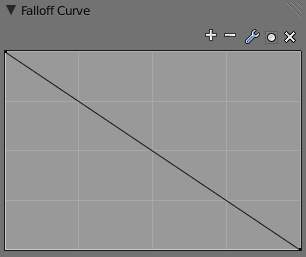
Default Falloff Curve panel graph. |
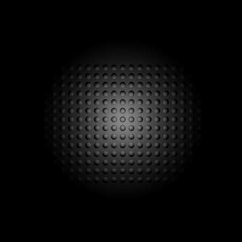
渲染 showing the Custom Curve lamp falloff type effect with default settings. |
{kind=link}
{kind=link}
If you want to have a light attenuation profile that gets more intense as it moves away from the light source, you could alter the graph as below:
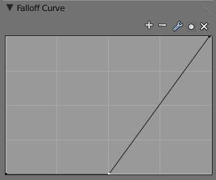
Falloff Curve for reversed attenuation. |
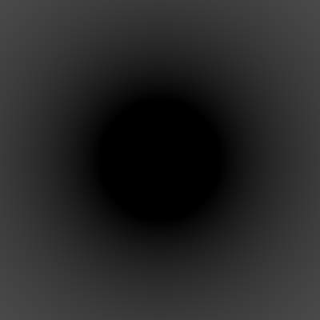
Falloff Curve for reversed attenuation rendered. |
{kind=link}
{kind=link}
You are obviously not just limited to simple changes such as reversing the attenuation profile, you can have almost any profile you desire.
Here is another example of a different Falloff Curve profile graph, along with its resultant render output:
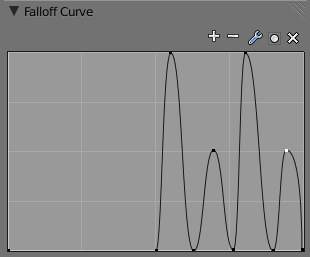
Oscillating attenuation profile. |
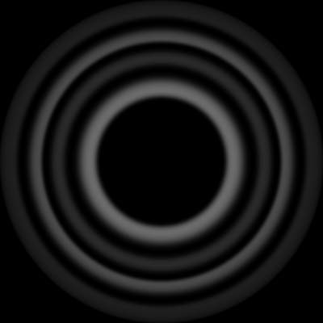
渲染 showing the effects of a “wavelet” profile graph on the light attenuation. |
{kind=link}
{kind=link}
Inverse Square¶
{kind=link}
渲染 showing the Inverse Square lamp falloff type effect with default settings.
This lamp falloff type attenuates its intensity according to inverse square law, scaled by the Distance value. Inverse square is a sharper, realistic decay, useful for lighting such as desk lamps and street lights. This is similar to the old Quad option (and consequently, to the new Lin/Quad Weighted option with Linear to 0.0 and Quad to 1.0), with slight changes.
Inverse Linear¶
{kind=link}
渲染 showing the Inverse Linear lamp falloff type effect with default settings.
This lamp falloff type attenuates its intensity linearly, scaled by the Dist value. This is the default setting, behaving the same as the default in previous Blender versions without Quad switched on, and consequently, like the new Lin/Quad Weighted option with Linear to 1.0 and Quad to 0.0. This is not physically accurate, but can be easier to light with.
Constant¶
{kind=link}
渲染 showing the Constant lamp falloff type effect with default settings.
This lamp falloff type does not attenuate its intensity with distance. This is useful for distant light sources like the sun or sky, which are so far away that their falloff is not noticeable. Sun and Hemi lamps always have constant falloff.
Sphere¶
{kind=link}
Screenshot of the 3D视图编辑窗口, showing the Sphere light clipping circle.
The Sphere option restricts the light illumination range of a Lamp or Spot lamp, so that it will completely stop illuminating an area once it reaches the number of Blender Units away from the Lamp, as specified in the Dist field.
When the Sphere option is active, a dotted sphere will appear around the light source, indicating the demarcation point at which this light intensity will be null.
The Sphere option adds a term to the chosen attenuation law, whatever it is:
I’ = I × (D - r) / D if r < D; 0 otherwise
Where:
- I’ is the required Intensity of light (with the Sphere option activated).
- I is the intensity of light calculated by the chosen attenuation law (without the Sphere option).
- D is the current setting of the Dist field.
- r is the distance from the lamp where the light intensity gets measured.
See the graphic at the end of the description of the Lin/Quad Weighted attenuation option.
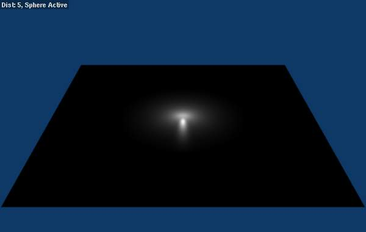
渲染 showing the light attenuation of a Constant falloff light type with the Sphere option active. |
{kind=link}
{kind=link}
例子¶
Distance 例子¶
In this example, the Lamp has been set pretty close to the group of planes. This causes the light to affect the front, middle and rear planes more dramatically. Looking at (Various Dist ance settings), you can see that as the Dist is increased, more and more objects become progressively brighter.
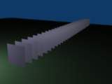
Distance: 10. |
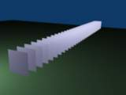
Distance: 100. |
Distance: 1000. |
The Distance parameter is controlling where the light is falling - at a linear rate by default - to half its original value from the light’s origin. As you increase or decrease this value, you are changing where this half falloff occurs. You could think of Distance as the surface of a sphere and the surface is where the light’s intensity has fallen to half its strength in all directions. Note that the light’s intensity continues to fall even after Distance. Distance just specifies the distance where half of the light’s energy has weakened.
Notice in Fig. Distance: 1000., that the farthest objects are very bright. This is because the falloff has been extended far into the distance, which means the light is very strong when it hits the last few objects. It is not until 1000 units that the light’s intensity has fallen to half of its original intensity.
Contrast this with Fig. Distance: 100., where the falloff occurs so soon that the farther objects are barely lit. The light’s intensity has fallen by a half by time it even reaches the tenth object.
You may be wondering why the first few planes appear to be dimmer? This is because the surface angle between the light and the object’s surface normal is getting close to oblique. That is the nature of a Lamp light object. By moving the light infinitely far away you would begin to approach the characteristics of the Sun lamp type.
Inverse Square 例子¶
Inverse Square makes the light’s intensity falloff with a non-linear rate, or specifically, a quadratic rate. The characteristic feature of using Inverse Square is that the light’s intensity begins to fall off very slowly but then starts falling off very rapidly. We can see this in the Fig. Inverse Square selected. (with the specified distances). images.
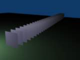
Inverse Square with 10. |
Inverse Square with 100. |
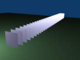
Inverse Square with 1000. |
With Inverse Square selected, the Distance field specifies where the light begins to fall off faster, roughly speaking; see the light attenuation description in Falloff types for more info.
In Fig. Inverse Square with 10., the light’s intensity has fallen so quickly that the last few objects are not even lit.
Both Fig. Inverse Square with 100. and Fig. Inverse Square with 1000. appear to be almost identical and that is because the Distance is set beyond the farthest object’s distance which is at about 40 BU out. Hence, all the objects get almost the full intensity of the light.
As above, the first few objects are dimmer than farther objects because they are very close to the light. Remember, the brightness of an object’s surface is also based on the angle between the surface normal of an object and the ray of light coming from the lamp.
This means there are at least two things that are controlling the surface’s brightness: intensity and the angle between the light source and the surface’s normal.
Sphere 例子¶
Clipping Sphere.
Sphere indicates that the light’s intensity is null at the Distance distance and beyond, regardless of the chosen light’s falloff. In Fig. Clipping Sphere. you can see a side view example of the setup with Sphere enabled and a distance of 10.
Any objects beyond the sphere receive no light from the lamp.
The Distance field is now specifying both where the light’s rays become null, and the intensity’s ratio falloff setting. Note that there is no abrupt transition at the sphere: the light attenuation is progressive (for more details, see the descriptions of the Sphere and Falloff types above).
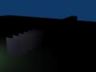
Sphere with 10. |
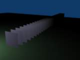
Sphere with 20. |
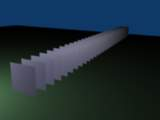
Sphere with 40. |
In Fig. Sphere with 10., the clipping sphere’s radius is 10 units, which means the light’s intensity is also being controlled by 10 units of distance. With a linear attenuation, the light’s intensity has fallen very low even before it gets to the first object.
In Fig. Sphere with 20., the clipping sphere’s radius is now 20 BU and some light is reaching the middle objects.
In Fig. Sphere with 40., the clipping sphere’s radius is now 40 units, which is beyond the last object. However, the light doesn’t make it to the last few objects because the intensity has fallen to nearly 0.
Hint
If a Lamp light is set to not cast shadows, it illuminates through walls and the like. If you want to achieve some nice effects like a fire, or a candle-lit room interior seen from outside a window, the Sphere option is a must. By carefully working on the Distance value you can make your warm firelight shed only within the room, while illuminating outside with a cool moonlight, the latter achieved with a Sun or Hemi light or both.